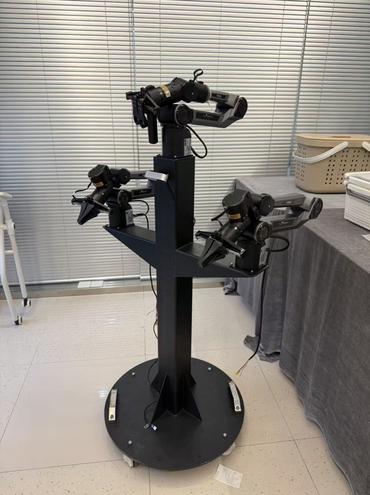

ActiveLab
Benchmarking active perception and manipulation in robotic chemistry
A three-arm platform and a task suite spanning individual lab skills and multi-step workflows.

Abstract
ActiveLab studies active observation, fine manipulation, and active hand–eye coordination in a shared chemistry workspace. An independently movable camera arm observes the task while two gripper arms interact with labware. The task suite captures both individual interactions, such as inserting a glass rod into a test tube, and compositions, such as transferring liquid and returning the test tube to its rack.
Benchmark
Three related dimensions for examining the same chemistry task.
Active observation
Which parts of the workspace does the robot choose to observe?
Fine manipulation
How precisely does the robot align and move a tool?
Active hand–eye coordination
How does the timing of view changes relate to tool actions?
Three arms at one workstation
The upper arm carries the active camera. Two lower arms handle labware and tools, including handoffs between grippers.
- Camera arm
- Moves the observation viewpoint independently of the grippers.
- Manipulation arms
- Handle tools and labware through retrieval, placement, and fine interactions.
Task demonstrations
Browse atomic skills and composed tasks. Select a task to inspect its recording, camera views, or task steps.
Task preview
Task sequence
Featured tasks
Hover over a thumbnail to preview. Click a task to select it.
Viewpoint comparisons
Fixed and active views of the same task step.
Comparison videos pending.
Close-up skills
Individual actions with a view of tool alignment, contact, and motion.
Skill videos pending.
Full task rollouts
Observation and manipulation annotated on the same timeline.
Recorded rollouts pending.
Demonstration dataset
The processed collection pairs language instructions with camera views, robot state, and action at 30 Hz.
- Atomic tasks
- 40
- Composed tasks
- 10
- Demonstrations
- 5,000
- Trajectory hours
- 23.84
Processed snapshot from . Duration counts each trajectory once across the four RGB streams.
One episode, four perspectives
Each episode records an active view, a third-person view, and both wrist views alongside joint and gripper state and commands.
- Active viewCamera arm
- Third-person viewShared workspace
- Left wristLocal gripper view
- Right wristLocal gripper view
Evaluation
Protocol
Evaluation protocol pending.
Results
Benchmark results pending.